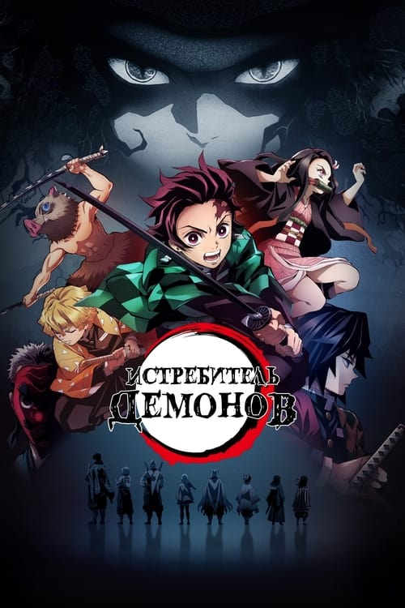
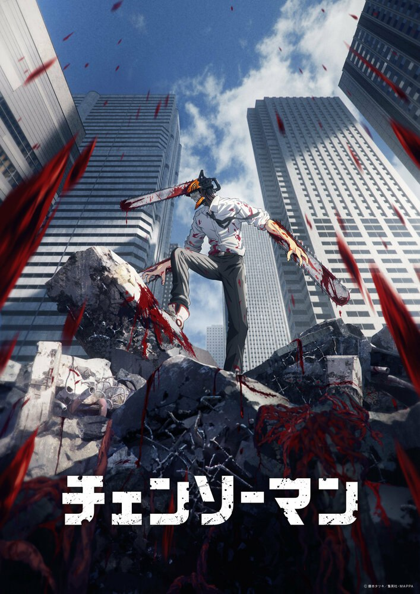
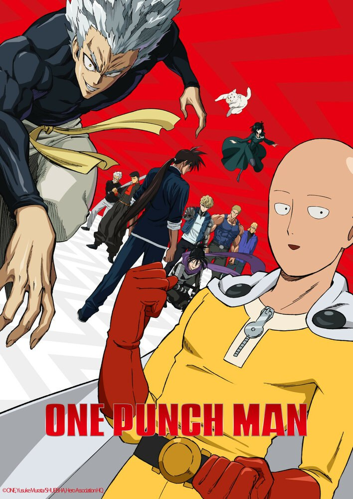
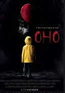
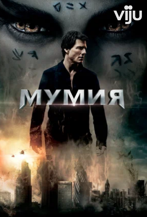
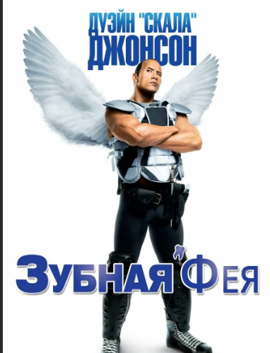

ИТОГИ 2022 ГОДА: Топ-20 лучших новых фильмов 2022
№1 :: Фильм Аватар 2 №2 :: Фильм Топ Ган 2 №3 :: Фильм кит №4 :: Фильм “Бэтмен” №5 :: Фильм “Банши Инишира” №6 :: Фильм “Фабельманы” (2022) №7 :: Фильм “На Западном фронте без перемен” (2022) №8 :: Фильм “Лучшие в аду” (2022) №9 :: Фильм “Быстрее пули” (2022) №10 :: Фильм “Всё везде и сразу” (2022) №11 :: Фильм “Черный ящик” (2022) №12 :: Фильм “Вавилон” (2022) №13 :: Фильм “Треугольник печали” (2022) №14 :: Фильм “Прорваться в НБА” (2022) №15 :: Фильм “Казнь” (2022) №16 :: Фильм “Элвис” (2022) №17 :: Фильм “Аманат” (2022) №18 :: Фильм “Камон Камон” (2022) №19 :: Фильм “Меню” (2022) №20 :: Фильм “За пивом!” (2022) |
Магическая битва (Jujutsu Kaisen) Кинопоиск: 8 Тип: аниме сериал Жанр: аниме, боевик, мультфильм, ужасы, фэнтези Год: 2020 Страна: Япония Мир, в котором демоны питаются людьми, а те об этом даже не догадываются. Когда-то давно самый могущественный демон был повержен, а части его тела разбросаны по свету. Тот, кто сможет их собрать и поглотить, получит безграничную власть и даже сможет уничтожить человечество. Физически развитого старшеклассника Юдзи Итадори волнуют насущные проблемы — почти всё время парень проводит в больнице с дедушкой, поэтому, чтобы отвязаться от настырных предложений вступить в спортивные клубы, записываетс...  Истребитель демонов (鬼滅の刃)
IMDb: 8.7 Тип: аниме сериал Жанр: мультфильм, нф и фэнтези, боевик и приключения Страна: Япония Действие происходит в эпоху Тайсё. Ещё с древних времён ходят слухи о том, что в лесу обитают человекоподобные демоны, которые питаются людьми и ходят по ночам, ища новую жертву. Но... это же просто легенда, ведь так?.. Танджиро Камадо — старший сын в семье, потерявший своего отца и взявший на себя заботу о своих родных. Однажды он уходит в соседний город, чтобы продать древесный уголь. Вернувшись утром, парень обнаруживает перед собой страшную картину: вся родня была зверски убита, а единствен...
Шазам! (Shazam!)
Кинопоиск: 6.72 IMDb: 7
Тип: фильм Жанр: боевик, комедия, фэнтези Год: 2019 В каждом из нас живет супергерой, нужна лишь толика магии, чтобы он проявил себя. Билли Бэтсон должен прокричать всего лишь одно слово - ШАЗАМ - чтобы из сообразительного четырнадцатилетнего мальчишки превратиться во взрослого супергероя Шазама.\ Реинкарнация безработного: История о приключениях в другом мире (Mushoku Tensei: Isekai Ittara Honki Dasu) Кинопоиск: 8.2 IMDb: 8.4
Тип: аниме сериал Жанр: аниме, комедия, мультфильм, приключения, фэнтези Год: 2021 Страна: Япония
34-летний безработный спасает группу подростков от смерти под колёсами грузовика, однако погибает сам. Он перерождается в волшебном мире под именем Рудеус Грейрат. Сохранив знания и опыт, он клянется вести полноценную жизнь и не повторять свои прошлые ошибки. Новые родители считают его, одаренноsго магической силой и разумом взрослого человека, гением, и вскоре Рудеус начинает учиться у могущественных воинов. Но, несмотря на его невинную внешность, парень по-прежнему извращенный отаку, который ме...  Человек бензопилаы Тип: аниме сериал Жанр: аниме, боевик, мультфильм, ужасы, фэнтези Год: 2022 Страна: Япония Дэндзи хотел жить спокойной жизнью со своей девушкой, но, чтобы расплатиться с оставшимися от отца долгами, был вынужден заниматься нелегальной охотой на демонов и однажды погиб. Его не самый обычный домашний питомец Потита каким-то образом слился с его мертвым телом, и теперь парень способен превращать конечности в бензопилы. Такого ценного кадра нанимает Бюро общественной безопасности, чтобы тот снова охотился на демонов — теперь официально.  Ванпанчмен (One Punch Man (2019))
Тип: аниме сериал Жанр: аниме, боевик, комедия, мультфильм, фантастика Год: 2019 Страна: Япония Парень по имени Сайтама живёт в мире, иронично похожем на наш. Ему 25, он лыс и прекрасен и к тому же силен настолько, что с одного удара аннигилирует всё, что представляет опасность для человечества. Он ищет себя в этой жизни, попутно раздавая подзатыльники монстрам и злодеям.
Наруто: Ураганные хроники (Naruto Shippuuden)
Кинопоиск: 8.2 IMDb: 8.7
Тип: аниме сериал Жанр: аниме, боевик, мультфильм, приключения, триллер, фантастика Год: 2007 Страна: Япония В мире Наруто незаметно пролетели два года. Бывшие новички пополнили ряды опытных синоби в ранге тюнин и дзёнин. Главные герои не сидели на месте – каждый стал учеником одного из легендарных Саннин – трех великих ниндзя Конохи. Парень в оранжевом продолжил обучение у мудрого, но эксцентричного Дзирайи, постепенно восходя на новую ступень боевого мастерства. Сакура выдвинулась в помощницы и доверенные лица целительницы Цунадэ – нового вождя Деревни Листвы. Ну а Саскэ, чья гордыня привела к изгнан...
 Оно (It)
Кинопоиск: 7.3 IMDb: 7.3
Тип: фильм Жанр: ужасы, фэнтези Год: 2017 Страна: США Когда в городке Дерри, штат Мэн, начинают пропадать дети, несколько ребят сталкиваются со своими величайшими страхами и вынуждены помериться силами со злобным клоуном Пеннивайзом, чьи проявления жестокости и список жертв уходят в глубь веков.
Война будущего (The Tomorrow War)
Кинопоиск: 6.3 IMDb: 6.5 Тип: фильм Жанр: боевик, фантастика, приключения Год: 2021 Страна: США В будущем идёт разрушительный конфликт с инопланетной расой. В попытке переломить ход войны учёные начинают призывать в свою армию солдат из прошлого.
Президент Линкольн: Охотник на вампиров (Abraham Lincoln: Vampire Hunter)
Кинопоиск: 5.92 IMDb: 5.9
Тип: фильм Жанр: боевик, фэнтези, ужасы Год: 2012 Страна: США Сюжет фильма раскрывает тайную жизнь Величайшего Президента Америки Авраама Линкольна — любящего мужа и отца днем и беспощадного убийцу вампиров ночью. Армия кровопийц, которым он бросил вызов, растет с каждым днем. Сможет ли президент великой страны противостоять полчищам вампиров и спасти свою семью и народ от неминуемой гибели?..  Мумия (The Mummy)
Кинопоиск: 7.77 IMDb: 7.1
Тип: фильм Жанр: приключения, боевик, фэнтези Год: 1999 Страна: morocco, Великобритания, США На бескрайних просторах египетской пустыни компания сорвиголов разных национальностей рыщет в поисках несметных сокровищ фараона, над которыми тяготеет жуткое древнее проклятие. Рядом с кладом покоится мумия коварного жреца, жестоко казненного за ужасное убийство могущественного правителя Египта. Золотоискатели потревожили многовековой покой гробницы, и мумия встает из могилы, чтобы погрузить мир в царство кошмара…
Мертвая тишина Кинопоиск: 6.73ая тишина (Dead Silence) IMDb: 6.1
Тип: фильм Жанр: ужасы Год: 2007 Страна: США Молодая пара, Джемми и Лиза, решили начать новую жизнь в маленьком городке вдали от суеты огромных мегаполисов. Только поселившись в этой заброшенной, запустелой точке на карте, они уже устали слушать сказки о наводняющих дома призраках и всей породы нечисти, обитающей повсюду. Когда неожиданно Лиза подвергается бесчеловечному убийству, Джемми, будучи главным подозреваемым в преступлении, решает провести независимое расследование относительно её загадочной смерти. Погружаясь в то, что он ещё не...
Крампус (Krampus)
Кинопоиск: 5.78 IMDb: 6.2
Тип: фильм Жанр: ужасы, комедия, фэнтези Год: 2015 Страна: США Мрачная святочная история о рождественском упыре, раскрывающая темную, бестрепетно искаженную сторону праздника. Когда в праздничные дни в проблемной семье юного Макса вспыхивает ссора, мальчик разочаровывается и заявляет, что ненавидит Рождество. Ему невдомек, что пренебрежение праздником разжигает ярость Крампуса – древнего злого демона, карающего скептиков, неспособных проникнуться духом Рождества. Жизнь расколотой семьи превращается в кромешный ад, когда любимые всеми символы праздника начин...
Круиз по джунглям (Jungle Cruise)
Кинопоиск: Тип: фильм Жанр: боевик, приключения, комедия Страна: США Хитростью и немалой сноровкой раздобыв бесценную карту верховьев Амазонки, бойкая археолог Лили Хоутон отправляется в экспедицию, чтобы найти волшебное дерево, цветок которого — согласно легенде — обладает невероятными целебными свойствами. Прихватив с собой младшего брата, который не в восторге от перспективы поездки в дикие джунгли, девушка нанимает проводника — капитана круизного пароходика по имени Фрэнк. Вся компания пускается в приключение, где их подстерегают не только смертельно опасные ...
Здравствуй, папа, Новый год (Daddy's Home)
Кинопоиск: 6.38 IMDb: 6.1
Тип: фильм Жанр: комедия Год: 2015 Страна: США Отец двоих детей возвращается к своей бывшей жене, которая успела выйти замуж, и теперь его ждет соперничество с отчимом за внимание своих отпрысков.  Зубная фея (Tooth Fairy) Кинопоиск: 6.1 IMDb: 5
Тип: фильм Жанр: комедия Год: 2010 Страна: Канада, США Жестокого и свирепого хоккеиста Дерека Томпсона часто зовут «Зубной феей» — сами догадайтесь почему. За выбитые на ледовой арене зубы своим соперникам он денег не даёт, а придётся, ведь самые настоящие зубные феи давно точат на него зуб.
Ламборгини: Человек-легенда (Lamborghini: The Man Behind the Legend)
IMDb
Тип: фильм Жанр: Комедия Год: 2022 Страна: Италия, США История самого дерзкого стартапа в мире суперкаров. Путь страсти, проб и ошибок Ферруччо Ламборгини и его превращения из сына фермера, мастерившего тракторы, в создателя легендарной машины, бросившего вызов самому Энцо Феррари...
Пожалуй на этом вcе
Больше фильмов в моем телеграм боте!!! @boboev22_bot |

.JPG)
.JPG)